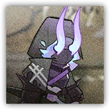
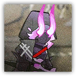

深池逐火战士 Dublinn Flamechaser Soldier
近战 物理；普通 任意
|
 |
附着了领袖火焰的深池部队战士。他们已经死亡，只有身躯在法术的操纵下践行着最后的渴望，一次又一次地站起。 |
深池逐火战士丨Flamechaser Soldier
中型类人（任意），守序中立
| AC 15 | 先攻 +3（13） |
| HP 32（5d8+10） | |
| 速度 30 尺 | |
| 调整 | 豁免 | 调整 | 豁免 | 调整 | 豁免 | |||||||||
|---|---|---|---|---|---|---|---|---|---|---|---|---|---|---|
| 力量 | 16 | +3 | +3 | 敏捷 | 16 | +3 | +3 | 体质 | 14 | +2 | +2 | |||
| 智力 | 9 | -1 | -1 | 感知 | 12 | +1 | +1 | 魅力 | 12 | +1 | +1 |
| 抗性 暗蚀 |
| 装备 长剑，镶钉皮甲 |
| 感官 黑暗视觉60尺，被动察觉11 |
| 语言 通用语，维多利亚语，塔拉语 |
| CR 2（XP 450；PB +2） |
特质 Traits
魔法抗性 Magic Resistence。逐火战士为抵抗法术或魔法效应而作的豁免具有优势。
怨恨余烬 Ember of Resentment 。逐火战士生命值降至0期间不会死亡或昏迷，其变为小型生物，进入失能和隐形状态（若处于任何生物触及距离内则隐形被压制），直到其恢复任意生命值。在生命值降至0期间，逐火战士在累计受到三次伤害后才会真正死亡。
动作 Actions
长剑 Longsword。近战攻击检定：+5，触及5尺。命中：8（1d10+3）挥砍伤害。如果逐火战士周围5尺有燃烧的物件或生物，这次攻击会为目标添加灼燃标记。
余烬重生 Ember Rebirth（仅生命值为0时）。逐火战士进行DC15体质豁免，成功则恢复所有生命值。此动作项可以在失能时使用。
深池逐火精锐战士 Dublinn Flamechaser Elite Soldier
近战 物理；普通 任意
|
 |
附着了领袖火焰的深池部队精锐战士。更加执着地追逐着领袖的火焰，被法术操纵着不断站起。 |
深池逐火精锐战士丨Flamechaser Elite Soldier
中型类人（任意），守序中立
| AC 15 | 先攻 +3（13） |
| HP 60（8d8+24） | |
| 速度 30 尺 | |
| 调整 | 豁免 | 调整 | 豁免 | 调整 | 豁免 | |||||||||
|---|---|---|---|---|---|---|---|---|---|---|---|---|---|---|
| 力量 | 16 | +3 | +3 | 敏捷 | 16 | +3 | +3 | 体质 | 16 | +3 | +3 | |||
| 智力 | 9 | -1 | -1 | 感知 | 12 | +1 | +1 | 魅力 | 12 | +1 | +1 |
| 技能 运动+5，察觉+3 |
| 抗性 暗蚀 |
| 装备 长剑，镶钉皮甲 |
| 感官 黑暗视觉60尺，被动察觉11 |
| 语言 通用语，维多利亚语，塔拉语 |
| CR 3（XP 700；PB +2） |
特质 Traits
魔法抗性 Magic Resistence。逐火战士为抵抗法术或魔法效应而作的豁免具有优势。
怨恨余烬 Ember of Resentment 。逐火战士生命值降至0期间，其不会死亡或昏迷，其变为小型生物，进入失能和隐形状态（若处于任何生物触及距离内则隐形被压制）。在生命值降至0期间，逐火战士在累计受到三次伤害后才会真正死亡。
动作 Actions
多重攻击 Multiattack。深池逐火精锐战士发动两次长剑攻击。
长剑 Longsword。近战攻击检定：+5，触及5尺。命中：8（1d10+3）挥砍伤害，如果逐火战士周围5尺有燃烧的物件或生物，这次攻击会为目标添加灼燃标记。
余烬重生 Ember Rebirth（仅生命值为0时）。逐火战士进行DC15体质豁免，成功则恢复所有生命值。此动作项可以在失能时使用。
附赠动作 Bonus Actions
焚灭灼燃 Burnt Scorching。敏捷豁免检定：DC24，深池逐火精锐战士触及距离内一个有灼燃标记的生物。失败：17（4d6+3）无法减免的火焰伤害。失败或成功：目标身上的燃烧以及灼燃标记被清除。